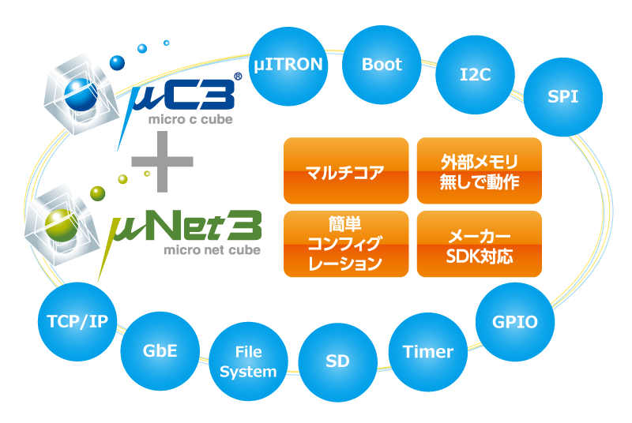

Embedded事業
リアルタイムOSの自社開発・販売
私たちの原点であり、中核をなすのが組込み向けリアルタイムOS（RTOS）や各種ミドルウェアの開発です。μITRON4.0仕様に準拠した「μC3」をはじめ、小型メモリ環境でも高速に動作するTCP/IPスタック、FATファイルシステムなど、ハードウェアに密着したソフトウェアを自社でゼロから開発・提供しています。
家庭用電化製品、医療機器、産業ロボット、自動車制御ユニットなど、私たちの製品は社会のあらゆる領域で「見えないけれど確実に動く技術」として活用されており、導入実績は1000製品以上。国内有数の大手メーカーからも継続的な信頼を得ています。